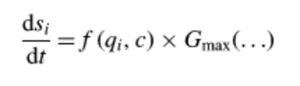

Our project is a Kiwi Vine Growth Simulation. This is based on the paper titled A functional-structural kiwifruit vine model integrating architecture, carbon dynamics, and effects of the environment by Mikolaj Cieslak, Alla N. Seleznyova, and Jim Hanan [1]. From the findings of this paper we built a kiwi vine growth simulation using the PlantGL package, which included a way to render objects called shapes. First we built the basic structure of the plant, then we added branch growth, leaf growth, fruit growth, then carbon dynamics.
This project was done using PlantGL, an open-source graphic toolkit for the creation, simulation and analysis of 3D virtual plants. This included geometries that can be transformed.
The project began with a blank python file. We started modeling the kiwi plant by creating the base. To do so, we modeled a trunk, two leaders, and several canes. The leaders are the two parts that come out of the trunk and the canes are the parts that come out of the leaders. This is done by creating cylinder objects using PlantGL and using transformations to move them into the correct locations.
Afterwards, we create the shoots by randomly placing 18 nodes within our canes. We use 18 since it's the typical number of first order auxiliary buds in a kiwi plant, which we refer to as nodes. To randomly generate the node locations we first randomly select a cane and then randomly select a position on the cane. We then set each node to a state, dormant, growing, or aborted, with all nodes starting at dormant. When the user inputted growth probability is met, we place a shoot at the node or the end of the shoots of the node in a randomized direction, only limited so that the branch does not fully overlap the one it grew out of. Afterwards, if the probability to abort the shoot is met, the shoot stops growing. This process is based on the markov chain provided in the paper by Mikolaj (page 7). In our program, we allow users to change the probabilities to any values they're interested in testing.
Then we started on the leaves. For both the leaves and the fruits, we had to use geometric modeling in order to provide the correct coordinates that would create the respective objects. We would then feed a numpy array of these points into PlantGL structures such as nurbs curves in order to create our desired 3D object.
|
|
|
Since the paper by Mikolaj did not provide information about how leaves were distributed on the branch, we decided on using a Gaussian distribution as our default distribution.
Fruit generation followed a similar process as the leaves. After modeling our fruits, we randomly generate them along the branches, with a random rotation at the point where it attaches to a branch.
After these components were done we added textures to make the plant look more realistic, which can be seen in the pictures above already. We used PlantGL's existing ImageTexture model, along with images downloaded from the web to give a more realistic look to the vine.
One of the biggest challenges of understanding the paper by Mikolaj is the part about carbon dynamics and how it affects the growth of the vine. Theoretically, if fully implemented from the paper, carbon levels will vary throughout the plant, making different parts of the branches grow to different sizes depending on the carbon present. As a result, we decided to simplify the effects of carbon by only implementing the portion in the paper mentioned on how carbon affects the sink (the area near the roots) of the kiwi plant. Below are the equations we refer to in order to model the effects of carbon concentration on sink growth (equations 4 and 5 in the paper by Mikolaj):
|  |
The equation above represents the rate of change of growth of the sink with respect to time. We used the values in tables 1 and 2 in the Mikolaj's paper as default values for the necessary parameters. Using the equations, we start with the sink having a default size and increase it by the rate of change at each timestep to simulate sink growth.
Finally, PlantGL runs everything at once and does not have a built in stepping function. To differentiate the timesteps of growth within our model, we added a generator to our program which allows us to pause our program at each timestep. That way we can see the growth and generate a gif that shows the process in order to effectively display our results.
Challenges we faced included understanding the research paper as well as the PlantGL documentation. The research paper included factors that we do not include in our model, such as temperature, light, and carbon dynamics (to the full extent). Understanding all the model mechanics at play, including both what we planned to implement and how to modify the paper's methods to exclude what we would not, took more time than we had assumed. This initial time sink was exacerbated by the PlantGL documentation, which was quite barren. After clicking through many links, we were able to find the documentation and use the given tutorial to figure out how to use the classes in the package. In addition to working off of built-in modules, a lot of linear algebra was used in order to create the correct base structure and to get the shoots of the same node to connect to each other. For example, we had to use 3D rotation matrices in order to find the correct end positions of the shoots after they were attached, something which took plenty of debugging due to unspecified defaults within the PlantGL package. As a result, for a long time, our shoots were spread throughout the GUI. There were also unspecified parameters portions of the paper such as the leaves/fruit distribution which we had to make assumptions on.
As with most projects, the most difficult part is getting started. Once we combed through the research paper and had an idea of how to begin the project became more manageable. However, this was a difficult point to get to due to the research paper assuming a high level of knowledge in botany as well as relying on many other papers. At the end what took the most time was details like tweaking the geometry and figuring out placement. Next time when we start a project this size we will allocate more time for little bugs like this. Another lesson we learned is to choose a topic that is interesting so that there is extra motivation to finish it.
[1] A functional-structural kiwifruit vine model integrating architecture, carbon dynamics and effects of the environment http://algorithmicbotany.org/papers/L-Kiwifruit.aob2011.html
[2] Shoot Axillary Bud Morphogenesis in Kiwifruit https://www.sciencedirect.com/science/article/pii/S0305736496903819
[3] PlantGL user guide: https://plantgl-fb.readthedocs.io/en/latest/user/index.html
[4] L-Systems simulator to become more familiar with L-systems: http://lsystems.santigarcor.me/
[5] Video on L-Systems with plants: https://www.youtube.com/watch?v=feNVBEPXAcE
[6] Website with other algorithmic botany papers and resources: http://algorithmicbotany.org/
In the code, Nicole worked on the trunk and leaders as well as the leaf/fruit number and positioning logic. She did the initial leaf and kiwi design and texturing, but these parts were later overwritten. She also did the majority of the final presentation slides, including generating the demo gif and including screenshots of the finished project.
Lucy contributed by working on the base model of the kiwi plant, the markov process, the carbon process, the randomized shoot generation, and the algebraic modeling of the leaves and kiwi fruits. They also added generators to the final code in order to be able to stop the program at each timestep and did both the milestone and final videos.
Angela worked on the very beginning of leaf generation and wrote the structure for the final slides. She wrote the majority of the final report.
Maleny added the textures to the trunk and vines and added the grass. She also added a revolving sun that was taken out in the final product. She put together the proposal, milestone, and final report webpages and submitted them. She also helped with the slides for the milestone and final presentation.